▾🫀 Cardiology 77
▾Cardiac Exam & Diagnostics 8
🙈
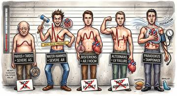
Cardiac Exam — Arterial Pulse Lineup15 🙈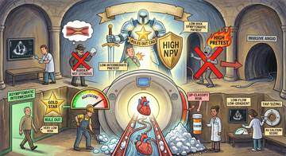
Cardiac Exam — Cardiac CT & Calcium Score15 🙈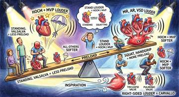
Cardiac Exam — Dynamic Maneuvers15 🙈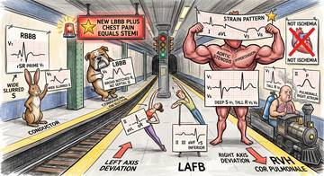
Cardiac Exam — ECG: Conduction & Chambers15 🙈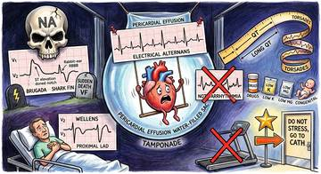
Cardiac Exam — ECG: Danger Patterns15 🙈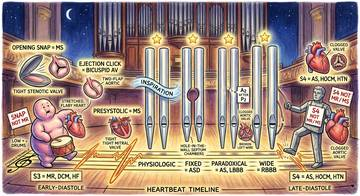
Cardiac Exam — Heart Sounds & S2 Splitting15 🙈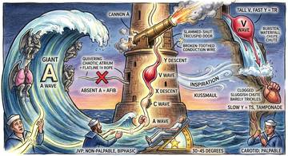
Cardiac Exam — JVP Waveforms & Signs15 🙈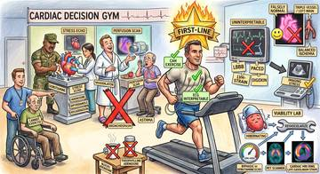
Cardiac Exam — Stress Testing & Viability15▾Valvular Disease 5
▾Heart Failure 20
🙈
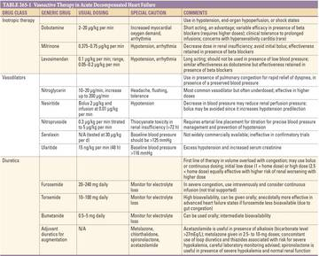
Heart Failure — Acute Decompensated HF (Table 265-1 Vasoactive Therapy)13 🙈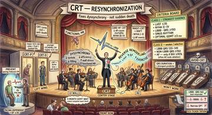
Heart Failure — CRT (Cardiac Resynchronization)13 🙈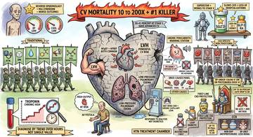
Heart Failure — Cardio-Renal: CKD as CV Risk Multiplier14 🙈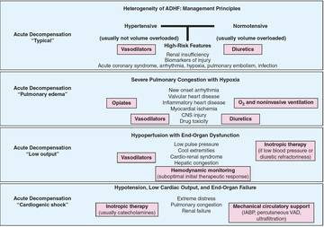
Heart Failure — Figure 265-2: ADHF Phenotypes & Therapy14 🙈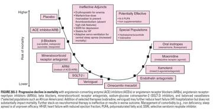
Heart Failure — Figure 265-3: Progressive Decline in HFrEF Mortality14 🙈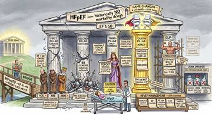
Heart Failure — HFpEF Management & Comorbidities15 🙈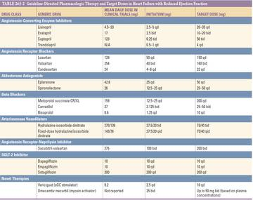
Heart Failure — HFrEF drugs (TABLE 265-2)17 🙈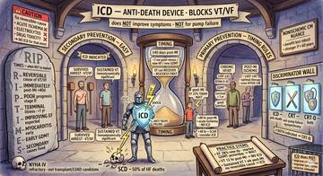
Heart Failure — ICD (Anti-Death Device)13 🙈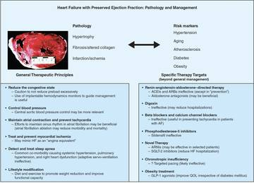
Heart Failure — Pathophysiology correlation of general therapeutic HF14 🙈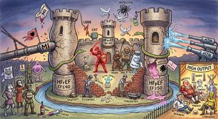
Heart Failure — SCENE 1 — HF CAUSES & PATHOGENESIS13 🙈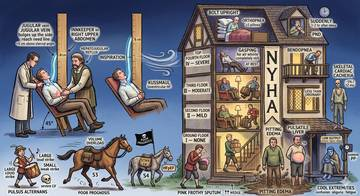
Heart Failure — SCENE 2 — HF EVALUATION & NYHA14 🙈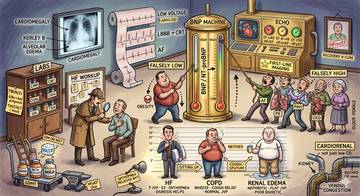
Heart Failure — SCENE 3 — HF DIAGNOSIS, BNP TRAPS & DDx14 🙈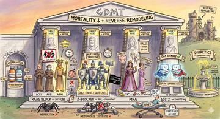
Heart Failure — SCENE 4 — HFrEF GDMT: The Four-Pillar Apothecary14 🙈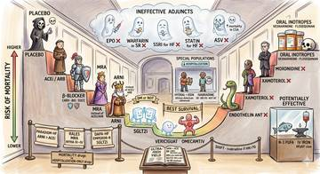
Heart Failure — SCENE 5 — HFrEF MORTALITY U-CURVE14 🙈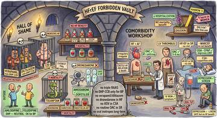
Heart Failure — SCENE 6: HF Hall of Shame & Comorbidities14 🙈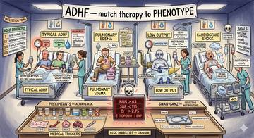
Heart Failure — SCENE 7: ADHF Phenotypes (ER Triage 4 Beds)13 🙈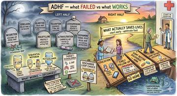
Heart Failure — SCENE 8: ADHF Trials & Discharge14 🙈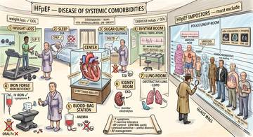
Heart Failure — SCENE 9 — HFpEF: The Crumbling Apothecary14 🙈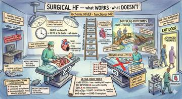
Heart Failure — Surgical & Advanced Therapies13 🙈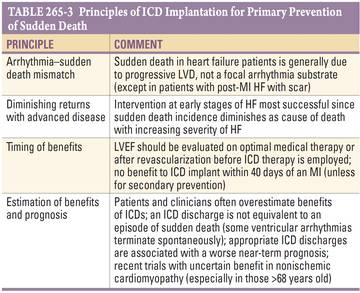
Heart Failure — Table 265-3: ICD Primary Prevention Principles10▾Ischemic Heart Disease / ACS 18
🙈
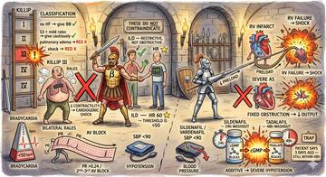
IHD / ACS — NSTE-ACS Diagnosis, Killip & Drug Cautions12 🙈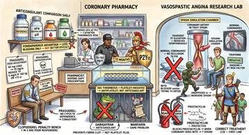
IHD / ACS — NSTE-ACS Management: Antiplatelet, Anticoagulation & Vasospasm12 🙈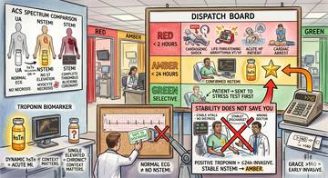
IHD / ACS — NSTE-ACS Pathophysiology & Spectrum13 🙈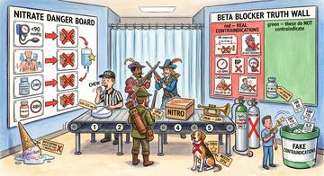
IHD / STEMI — adjuncts: nitrates & beta-blockers17 🙈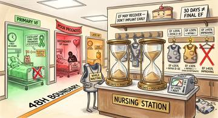
IHD / STEMI — arrhythmia, VF & ICD timing14 🙈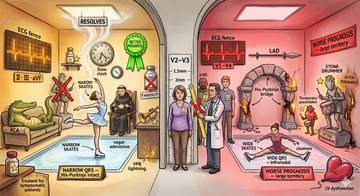
IHD / STEMI — conduction blocks & QRS width14 🙈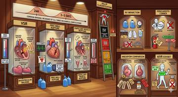
IHD / STEMI — mechanical complications, RV & pericarditis14 🙈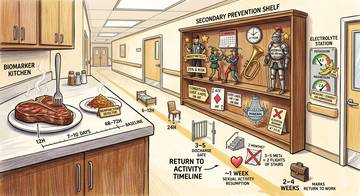
IHD / STEMI — post-MI care & secondary prevention14 🙈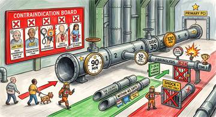
IHD / STEMI — reperfusion (PCI vs fibrinolysis)14 🙈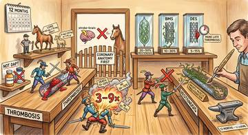
IHD / STEMI — stents & DAPT12 🙈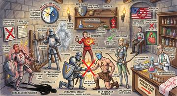
IHD — Antianginal Treatment13 🙈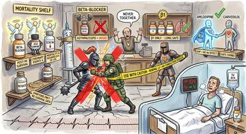
IHD — Beta-Blockers & Antianginal Safety12 🙈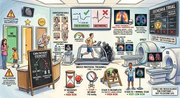
IHD — Exercise Stress Test: Interpretation & High-Risk Findings13 🙈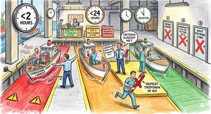
IHD — Pretest Probability & Triage13 🙈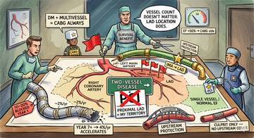
IHD — Revascularization Anatomy: Which Vessel, Which Procedure12 🙈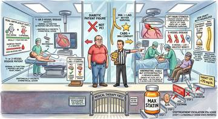
IHD — Revascularization: PCI vs CABG & Medical Therapy14 🙈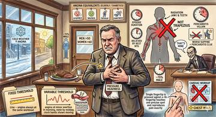
IHD — Stable Angina: Chest Pain Features14 🙈IHD — Stress Testing & CTA Decision Tree13▾Arrhythmias 15
🙈Arrhythmias — AIVR, CAST & PVC Suppression15
🙈Arrhythmias — AVNRT (Paroxysmal SVT)15
🙈Arrhythmias — Approach to Supraventricular Arrhythmias13
🙈Arrhythmias — Idiopathic VT (RVOT & Fascicular)14
🙈Arrhythmias — Inherited Channelopathies (LQTS, Brugada, CPVT, Short QT)13
🙈Arrhythmias — Monomorphic VT (Scar / Structural Disease)13
🙈Arrhythmias — PVCs & NSVT (Benign vs Structural)13
🙈Arrhythmias — Polymorphic VT, Torsades & VF15
🙈Arrhythmias — Pre-excited AF in WPW (Do Not Use AV-Nodal Blockers)15
🙈Arrhythmias — Sinus Tachycardia13
🙈Arrhythmias — Structural VT Substrates (ARVC, NICM, Sarcoid, Chagas)12
🙈Arrhythmias — VF & Electrical Storm14
🙈Arrhythmias — Vagal Maneuvers & Adenosine in SVT16
🙈Arrhythmias — WPW & Accessory Pathways (AVRT)13
🙈Arrhythmias — Wide-Complex Tachycardia Approach & Treatment14
▾Pericardial Disease 7
🙈Pericardial Disease — Acute Pericarditis14
🙈Pericardial Disease — Cardiac Tamponade14
🙈Pericardial Disease — Constrictive Pericarditis14
🙈Pericardial Disease — Constrictive vs Restrictive (Harrison's 281-2)14
🙈Pericardial Disease — Etiology & Classification14
🙈Pericardial Disease — Pericardial Effusion14
🙈Pericardial Disease — Recurrent Pericarditis14
▾🫁 Respiratory 44
▾COPD 4
▾Asthma 12
🙈Asthma — Acute Severe Asthma / Status Asthmaticus ER12
🙈Asthma — Chronic Step-Up Therapy Ladder12
🙈Asthma — Diagnosis & Reversibility Workup12
🙈Asthma — Exacerbation Triggers Winter Scene12
🙈Asthma — Pharmacology Pharmacy (Theophylline, AERD, ICS side effects)12
🙈Asthma — The Asthma Airway Siege (pathophysiology)12
🙈Asthma — The Asthma Diagnostic Stadium (v2 rebuild)12
🙈Asthma — The Asthma Drug Armory (drug classes)12
🙈Asthma — The Asthma ER & Special Populations Ward (Treatment v2)13
🙈Asthma — The Asthma Step Ladder (GINA steps)12
🙈Asthma — The Type 2 Cytokine Court & Biologic Knights12
🙈Asthma — Type 2 Biologics Castle12
▾ILD 3
▾Pneumonia 4
▾Pleural Disease 3
▾Pulmonary Hypertension 3
▾Bronchiectasis 3
▾HP & Eosinophilic Pneumonia 4
▾Sleep Apnea (OSA) 3

▾Respiratory Disturbance / PFTs 5
🙈Respiratory Disturbance — DLCO Bazaar (High vs Low Causes)14
🙈Respiratory Disturbance — Disease Pattern Recognition (Pulmonology Waiting Room)13
🙈Respiratory Disturbance — Flow-Volume Loop Gallery (Upper-Airway Obstruction)14
🙈Respiratory Disturbance — Hypoxemia, A–a Gradient & Shunt (Gas-Exchange Factory)15
🙈Respiratory Disturbance — PFT Workshop (Volumes & FEV₁/FVC Algorithm)12
▾🚽 Nephrology / Electrolytes / Acid–Base 131
▾Acid–Base 6
▾CKD 6
▾Acute Kidney Injury 9
🙈AKI — Complications & Treatment17
🙈AKI — Diagnosis13
🙈AKI — Intrinsic 1: ATN17
🙈AKI — Intrinsic 2: Nephrotoxins16
🙈AKI — Overview & Prerenal16
🙈AKI — Postrenal Obstruction14
🙈AKI — SCENE AKI-01: The Five Workshops14
🙈AKI — SCENE AKI-02: The Poison Barrel Dock13
🙈AKI — SCENE AKI-03: The AIN Sick Bay13
▾Glomerular Disease 24
🙈Glomerular (Nephritic) — ANCA Vasculitis (GPA / MPA / EGPA)13
🙈Glomerular (Nephritic) — Anti-GBM / Goodpasture13
🙈Glomerular (Nephritic) — Endocarditis-Associated GN13
🙈Glomerular (Nephritic) — IgA Nephropathy (Berger's Disease)12
🙈Glomerular (Nephritic) — Lupus Nephritis14
🙈Glomerular (Nephritic) — MPGN / C3 Glomerulopathy13
🙈Glomerular (Nephritic) — Mesangioproliferative GN13
🙈Glomerular (Nephritic) — Post-Streptococcal GN (PSGN)13
🙈Glomerular (Nephrotic) — Basement Membrane Syndromes: Alport / Thin BM / Nail-Patella14
🙈Glomerular (Nephrotic) — Cholesterol (Atheroembolic) Nephropathy14
🙈Glomerular (Nephrotic) — Diabetic Nephropathy: Management14
🙈Glomerular (Nephrotic) — Diabetic Nephropathy: Pathology & Natural History15
🙈Glomerular (Nephrotic) — Fabry's Disease14
🙈Glomerular (Nephrotic) — Focal Segmental Glomerulosclerosis (FSGS)14
🙈Glomerular (Nephrotic) — Glomerular Deposition Diseases (Amyloid / MIDD)14
🙈Glomerular (Nephrotic) — HIV-Associated Nephropathy (HIVAN)13
🙈Glomerular (Nephrotic) — Infection-Related Nephropathies16
🙈Glomerular (Nephrotic) — Membranous Nephropathy15
🙈Glomerular (Nephrotic) — Minimal Change Disease14
🙈Glomerular (Nephrotic) — Sickle Cell Nephropathy14
🙈Glomerular Disease — Nephritic Differential by Complement (Complement Courthouse)12
🙈Glomerular Disease — Nephritic Syndrome (Cola-Urine Detective Agency)12
🙈Glomerular Disease — Nephrotic PEAL & Podocyte Diseases (Podocyte Elementary)12
🙈Glomerular Disease — Nephrotic Syndrome (Leaky Sieve Factory)13
▾Tubulointerstitial Disease 6
▾Calcium Disorders (Renal) 5
▾Renal Approach & Azotemia 5
🙈Renal Approach — Azotemia / Uremia Overview (Pre/Intra/Post-renal & BUN:Cr)14
🙈Renal Approach — GFR & Estimation (creatinine, cystatin C, eGFR equations)14
🙈Renal Approach — Hematuria (glomerular vs urologic, casts, malignancy workup)14
🙈Renal Approach — Polyuria (osmotic vs water diuresis, DI types, water deprivation test)14
🙈Renal Approach — Proteinuria (filtration barrier, glomerular/tubular/overflow, UACR, nephrotic)14
▾Renal Reference & Workup 20
🙈Renal Reference — AKI Algorithm (Harrison)13
🙈Renal Reference — AKI Causes, Labs & Clinical Features14
🙈Renal Reference — AKI Diagnostic Steps12
🙈Renal Reference — AKI Pattern Table12
🙈Renal Reference — AKI Urine Microscopy & Dipstick Algorithm13
🙈Renal Reference — Acid-Base (Sketchy pHun Park)12
🙈Renal Reference — Acid-Base Approach (Step 1 & 2 Map)12
🙈Renal Reference — Acid-Base Compensation Formulas (Table 58-1)12
🙈Renal Reference — BUN:Cr Ratio12
🙈Renal Reference — FENa Interpretation13
🙈Renal Reference — GFR Estimation Formulas11
🙈Renal Reference — IV Fluid Types11
🙈Renal Reference — Intrinsic AKI by Compartment14
🙈Renal Reference — Intrinsic Renal Failure Figure (Harrison)14
🙈Renal Reference — Low FENa Exceptions10
🙈Renal Reference — Muddy Brown Granular Cast (Microscopy)6
🙈Renal Reference — Polyuria DDx (With vs Without AKI)10
🙈Renal Reference — Polyuria in AKI9
🙈Renal Reference — SGLT2 Inhibitor Renoprotection13
🙈Renal Reference — Urine Sediment Cheat Sheet11
▾Kidney Transplant 8
🙈Kidney Transplant — CMV Diagnosis, Treatment & Prophylaxis (CMV 2)14
🙈Kidney Transplant — CMV Risk, Timing & Clinical Spectrum (CMV 1)14
🙈Kidney Transplant — Chronic Complications (Long Watch)14
🙈Kidney Transplant — Contraindications & Who Gets Transplanted14
🙈Kidney Transplant — Drug Toxicities, Nephrotoxicity & CYP3A (Management 2)14
🙈Kidney Transplant — Immunosuppression by Signal (Management 1)14
🙈Kidney Transplant — Peri-op to 2 Weeks Post-Transplant14
🙈Kidney Transplant — Rejection (TCMR vs ABMR)14
▾Hypertension 10
🙈Hypertension — Antihypertensive Classes & Lifestyle17
🙈Hypertension — Classification, Targets & White-Coat/Masked HTN13
🙈Hypertension — Emergency vs Urgency & BP-Lowering Protocol13
🙈Hypertension — First-Line Drug Classes13
🙈Hypertension — Lifestyle Modifications & BP Impact11
🙈Hypertension — Secondary Causes & Pregnancy Safety15
🙈Hypertension — Secondary HTN (Causes, Red Flags & Workup)14
🙈Hypertension — The BP City Hall (Physiology, Classification & Measurement)16
🙈Hypertension — Thiazides, Resistant HTN & Potassium Management15
🙈Hypertension — Urgency, Emergency & Special Populations14
▾Hyponatremia 9
🙈Hyponatremia — Diagnostic Algorithm (Osm → Mimics → UOsm → UNa → Volume)15
🙈Hyponatremia — Euvolemic & SIADH (Rule Out Mimics)14
🙈Hyponatremia — Hypervolemic (Edematous States)14
🙈Hyponatremia — Hypovolemic (Renal vs Extrarenal, Urine Na)15
🙈Hyponatremia — Low Solute (Beer Potomania & Tea-and-Toast)12
🙈Hyponatremia — Serum Osmolality First (Rule Out Pseudo)14
🙈Hyponatremia — Treatment, Correction Limits & ODS15
🙈Hyponatremia — Volume Status Crossroads14
🙈SIADH — Diagnosis, Causes & Treatment20
▾Hypernatremia 6
▾Hypokalemia 7
▾Hyperkalemia 10
🙈Hyperkalemia — Type 4 RTA (hyporeninemic hypoaldosteronism)14
🙈Hyperkalemia — clinical features & ECG15
🙈Hyperkalemia — diagnosis (staircase algorithm)14
🙈Hyperkalemia — drugs (the saboteur workshop)14
🙈Hyperkalemia — excess intake & load15
🙈Hyperkalemia — mechanisms (real vs fake + 3 causes)14
🙈Hyperkalemia — nephron K+ secretion (4 pillars)14
🙈Hyperkalemia — redistribution (transcellular shift)14
🙈Hyperkalemia — treatment (stabilize, shift, remove)14
🙈Hyperkalemia — where renal K+ excretion fails14
▾🦋 Endocrine 93
▾Diabetes 19
🙈DM — Scene 1 — Acute Hyperglycemic Crisis: DKA vs HHS Diagnosis15
🙈DM — Scene 1 — DM Pathophys & Dx: The Diagnostic Threshold Crossing14
🙈DM — Scene 1 — Diabetes Pharmacology: The Liver-Pancreas Workshop14
🙈DM — Scene 2 — Acute Hyperglycemic Treatment: DKA/HHS Management14
🙈DM — Scene 2 — DM Pathophys & Dx: T1DM Battle vs T2DM Factory14
🙈DM — Scene 2 — Diabetes Pharmacology: The Gut-Kidney Plumbing13
🙈DM — Scene 3 — T2DM Algorithms: The Escalation Staircase & A1c Target Dial14
🙈DM — Scene 4 — Insulin: Types, Kinetics & Regimens15
🙈Diabetes — Complication 1: Diabetic Nephropathy13
🙈Diabetes — Complication 2: Autonomic & Peripheral Neuropathy / Foot13
🙈Diabetes — Dx Overview 1: Diagnostic Menu & Classification12
🙈Diabetes — Dx Overview 2: Screening, Prediabetes & Inpatient Targets12
🙈Diabetes — Emergency: DKA & HHS Resuscitation14
🙈Diabetes — Scene 1: T2DM Severity Triage Gate12
🙈Diabetes — Scene 2: T2DM Phenotype Picker's Pharmacy12
🙈Diabetes — Scene 3 Incretins: GLP-1 / GIP Harbor10
🙈Diabetes — Scene 3: Classification Hall (Pathophys & Dx)11
🙈Diabetes — Scene B: The Diabetes War Room (CV Benefit & Comorbidity Drug Picks)13
🙈Diabetes — Tx 1: Oral & Injectable Drug Classes12
▾Diabetes — Complications 5
🙈DM — Scene 1 — Diabetic Complications: The Eye Tower14
🙈DM — Scene 2 v2 — Diabetic Complications: The Kidney Wing & Albumin River (REBUILD)14
🙈DM — Scene 3 — Diabetic Complications: The Nerve Cellar15
🙈DM — Scene 4A — Diabetic Complications: The Foot Gates & Infection Moat (REBUILD - SPLIT)15
🙈DM — Scene 4B — Diabetic Complications: The CVD Battlefield & Skin Mural (REBUILD - SPLIT)15
▾Thyroid 11
🙈Thyroid — Bethesda Cytology & FNA14
🙈Thyroid — Diagnostic Algorithm14
🙈Thyroid — Hyperthyroidism & Graves'17
🙈Thyroid — Hypothyroidism (Hashimoto & Lab Traps)17
🙈Thyroid — Levothyroxine (LT4) Therapy14
🙈Thyroid — Myxedema Coma & Central Hypothyroidism14
🙈Thyroid — Nodule Workup & TI-RADS14
🙈Thyroid — Painful & Silent Thyroiditis15
🙈Thyroid — Thyroid Cancers & Management14
🙈Thyroid — Thyroid Storm & Amiodarone (AIT)16
🙈Thyroid — Uptake & Thyrotoxicosis Workup15
▾Parathyroid & Bone 10
🙈Parathyroid/Bone — Chapter 1: Bone Formation & the BMU (Stonemason Guild)14
🙈Parathyroid/Bone — Chapter 2: Resorption, Turnover Markers & Antiresorptives13
🙈Parathyroid/Bone — Chapter 3: Vitamin D Synthesis Road (Skin, Liver, Kidney)13
🙈Parathyroid/Bone — Hypercalcemia of Malignancy (Marketplace)13
🙈Parathyroid/Bone — Hypoparathyroidism (Empty Throne Room)13
🙈Parathyroid/Bone — Non-Parathyroid Hypocalcemia (Deficient Village & ICU)12
🙈Parathyroid/Bone — Primary Hyperparathyroidism (Throne Room)14
🙈Parathyroid/Bone — Pseudohypoparathyroidism (GNAS Masquerade)12
🙈Parathyroid/Bone — Three-River Harbor: Ca, Phosphate & Magnesium12
🙈Parathyroid/Bone — Vitamin D Action & Deficiency (Marketplace)12
▾Calcium / PTH / Vitamin D 19
🙈Calcium/PTH/VitD — The CKD-MBD Cascade Workshop14
🙈Calcium/PTH/VitD — The Ca:PO4:PTH Pattern Hall12
🙈Calcium/PTH/VitD — The CaSR Sensitivity Lab (FHH vs PHPT)14
🙈Calcium/PTH/VitD — The CaSR Thermostat Workshop13
🙈Calcium/PTH/VitD — The Calcium Courthouse12
🙈Calcium/PTH/VitD — The Calcium Crisis ER Ladder14
🙈Calcium/PTH/VitD — The Calcium Forms Courtroom14
🙈Calcium/PTH/VitD — The Calcium Kingdom12
🙈Calcium/PTH/VitD — The FGF23 Saboteur Guild & Hyperphosphatemia Ward12
🙈Calcium/PTH/VitD — The Hypocalcemia Mirror Courtroom15
🙈Calcium/PTH/VitD — The Magnesium Triangle Tavern16
🙈Calcium/PTH/VitD — The Mineralization Construction Site13
🙈Calcium/PTH/VitD — The Mineralization Workshop12
🙈Calcium/PTH/VitD — The PHPT Surgery Decision Tree14
🙈Calcium/PTH/VitD — The PTH Receptor Resistance Clinic13
🙈Calcium/PTH/VitD — The PTHrP Tumor Imposter12
🙈Calcium/PTH/VitD — The Parathyroid Adenoma Office14
🙈Calcium/PTH/VitD — The Phosphate Vanishing Act13
🙈Calcium/PTH/VitD — The Vitamin D Lab Pattern Ward12
▾Adrenal — Cushing & Mass 10
🙈Adrenal — ACC Villain Reveal13
🙈Adrenal — Adrenal Mass Gallery (Incidentaloma)13
🙈Adrenal — Cushing Causes Court12
🙈Adrenal — Cushing Diagnostic Lab15
🙈Adrenal — Cushing Treatment Pharmacy12
🙈Adrenal — Cushingoid Patient Clinic12
🙈Adrenal — Imaging War Room & Pathology Lab14
🙈Adrenal — Incidentaloma Triage Bay (Functional? Malignant?)15
🙈Adrenal — Mass Review: Imaging & Surgical Decision Tree16
🙈Adrenal — Surgical Armory & Mitotane Apothecary12
▾Adrenal Insufficiency & CAH 9
🙈 Adrenal Insufficiency — Treatment & Replacement14
🙈Adrenal Insufficiency/CAH — CAH Diagnostic Clinic & Treatment Pharmacy13
🙈Adrenal Insufficiency/CAH — CAH Triplets (21/11/17)13
🙈Adrenal Insufficiency/CAH — Chronic AI Clinic & Adrenal Crisis ER15
🙈Adrenal Insufficiency/CAH — Diagnostic Algorithm Lab16
🙈Adrenal Insufficiency/CAH — Etiology Atlas of Adrenal Insufficiency14
🙈Adrenal Insufficiency/CAH — The HPA Axis & Adrenal Zones Castle13
🙈Adrenal Insufficiency/CAH — The Steroidogenesis Factory14
🙈Adrenal Insufficiency/CAH — Three-Bucket Hospital (Primary vs Secondary vs Tertiary)14
Adrenal Insufficiency — Treatment & Replacement14
🙈Adrenal Insufficiency/CAH — CAH Diagnostic Clinic & Treatment Pharmacy13
🙈Adrenal Insufficiency/CAH — CAH Triplets (21/11/17)13
🙈Adrenal Insufficiency/CAH — Chronic AI Clinic & Adrenal Crisis ER15
🙈Adrenal Insufficiency/CAH — Diagnostic Algorithm Lab16
🙈Adrenal Insufficiency/CAH — Etiology Atlas of Adrenal Insufficiency14
🙈Adrenal Insufficiency/CAH — The HPA Axis & Adrenal Zones Castle13
🙈Adrenal Insufficiency/CAH — The Steroidogenesis Factory14
🙈Adrenal Insufficiency/CAH — Three-Bucket Hospital (Primary vs Secondary vs Tertiary)14
Adrenal Insufficiency — Treatment & Replacement14
🙈Adrenal Insufficiency/CAH — CAH Diagnostic Clinic & Treatment Pharmacy13
🙈Adrenal Insufficiency/CAH — CAH Triplets (21/11/17)13
🙈Adrenal Insufficiency/CAH — Chronic AI Clinic & Adrenal Crisis ER15
🙈Adrenal Insufficiency/CAH — Diagnostic Algorithm Lab16
🙈Adrenal Insufficiency/CAH — Etiology Atlas of Adrenal Insufficiency14
🙈Adrenal Insufficiency/CAH — The HPA Axis & Adrenal Zones Castle13
🙈Adrenal Insufficiency/CAH — The Steroidogenesis Factory14
🙈Adrenal Insufficiency/CAH — Three-Bucket Hospital (Primary vs Secondary vs Tertiary)14▾Primary Aldosteronism 5
▾Pituitary / DI / SIADH 5
🙈Pituitary/DI/SIADH — AVP/ADH physiology (posterior pituitary)14
🙈Pituitary/DI/SIADH — Diabetes insipidus causes (central vs nephrogenic)14
🙈Pituitary/DI/SIADH — Diabetes insipidus treatment14
🙈Pituitary/DI/SIADH — Polyuria diagnostic approach14
🙈Pituitary/DI/SIADH — SIADH (euvolemic hyponatremia)15
▾🩸 Hematology / Oncology 123
▾Anemia Workup / CBC 5
▾Iron / Microcytic Anemia 6
🙈Iron / Microcytic — anemia of chronic disease & hepcidin (Burning Castle)12
🙈Iron / Microcytic — approach (suspect lineup: IDA vs ACD vs thal vs sideroblastic)13
🙈Iron / Microcytic — iron deficiency causes (Suffering Village)12
🙈Iron / Microcytic — iron deficiency treatment (oral, IV, monitoring)12
🙈Iron / Microcytic — iron metabolism & hepcidin control12
🙈Iron / Microcytic — iron studies & IRP/IRE regulation12
▾Megaloblastic / B12-Folate 10
🙈Megaloblastic — B12 Clinical Features & Neurology12
🙈Megaloblastic — B12 Deficiency Causes16
🙈Megaloblastic — B12 Metabolism, Absorption & Transport12
🙈Megaloblastic — B12 vs Folate Comparison16
🙈Megaloblastic — Diagnosis & Labs14
🙈Megaloblastic — Folate Sources, Causes & Treatment12
🙈Megaloblastic — Macrocytic Approach & Biochemistry13
🙈Megaloblastic — Pernicious Anemia13
🙈Megaloblastic — Treatment13
🙈Megaloblastic — Workup & Pharmacy Overview14
▾Hemolytic Anemia 5
▾Hemoglobinopathies 7
🙈Hemoglobinopathy — The Alpha Ladder & Variant Gallery11
🙈Hemoglobinopathy — The Cyanosis Courtroom14
🙈Hemoglobinopathy — The Hemoglobin Forge13
🙈Hemoglobinopathy — The Sickle Armory13
🙈Hemoglobinopathy — The Sickle River: Catastrophes13
🙈Hemoglobinopathy — The Sickle River: Origins14
🙈Hemoglobinopathy — The Thalassemia Crucible14
▾Bone Marrow Failure / Aplastic 7
🙈Bone Marrow Failure — The Aplastic Wasteland (AA Etiology)13
🙈Bone Marrow Failure — The Constitutional Archives (Inherited BMF)13
🙈Bone Marrow Failure — The Empty Factory13
🙈Bone Marrow Failure — The Fibrotic Quarry (Myelophthisic Anemias)14
🙈Bone Marrow Failure — The Immune Siege (AA Pathophysiology & Diagnosis)13
🙈Bone Marrow Failure — The Red Cell Void (PRCA)16
🙈Bone Marrow Failure — The Rescue Station (AA Treatment)14
▾Polycythemia / MPN 9
🙈Polycythemia / MPN — Approach to polycythemia (workup)14
🙈Polycythemia / MPN — Essential thrombocythemia14
🙈Polycythemia / MPN — MPN overview (PV vs PMF vs ET)14
🙈Polycythemia / MPN — Myelofibrosis clinical features & diagnosis14
🙈Polycythemia / MPN — Myelofibrosis treatment13
🙈Polycythemia / MPN — Polycythemia Vera clinical features & complications13
🙈Polycythemia / MPN — Polycythemia Vera pathophysiology (JAK2)13
🙈Polycythemia / MPN — Polycythemia Vera treatment13
🙈Polycythemia / MPN — Primary myelofibrosis pathophysiology14
▾MDS 3
▾AML 8
▾CML 6

▾CLL 7
🙈CLL — Complications: Infections, Autoimmune Cytopenias & Richter13
🙈CLL — Diagnosis & Immunophenotype14
🙈CLL — Epidemiology, Immunophenotype & Diagnosis15
🙈CLL — Prognosis & Treatment14
🙈CLL — Rai/Binet Staging & Prognostic Risk Map14
🙈CLL — Response Assessment, MRD, Sequencing & Cellular Therapy15
🙈CLL — Treatment: BTK Inhibitors, Venetoclax & FCR14
▾NHL / Lymphoma 7
▾Plasma Cell Dyscrasias 12
🙈Plasma Cell — Giant Crab (CRAB Criteria & Complications)14
🙈Plasma Cell — Heavy Chain Diseases (Gamma/Alpha/Mu)13
🙈Plasma Cell — M-Spike & Quality Control Lab (SPEP/UPEP/FLC)12
🙈Plasma Cell — MGUS to Smoldering to Myeloma Spectrum14
🙈Plasma Cell — Myeloma Bone Disease & Microenvironment12
🙈Plasma Cell — Myeloma Emergencies & Complications14
🙈Plasma Cell — POEMS Syndrome14
🙈Plasma Cell — Relapsed/Refractory & Novel Immunotherapy14
🙈Plasma Cell — The Antibody Factory (Immunoglobulin Structure)12
🙈Plasma Cell — Treatment Backbone & Transplant14
🙈Plasma Cell — Waldenström Macroglobulinemia & Hyperviscosity14
🙈Plasma Cell — War Room (Diagnosis, ISS Staging & Genetics)14
▾Coagulation Disorders 9
🙈Coagulation — Acquired Inhibitors of Coagulation Factors13
🙈Coagulation — Cascade Overview17
🙈Coagulation — DIC (mechanism, triggers, consumption)13
🙈Coagulation — DIC (scoring, treatment, mimics)14
🙈Coagulation — Hemophilia A & B (presentation, labs, dosing)13
🙈Coagulation — Hemophilia: Inhibitors, Emicizumab & Rare Factors13
🙈Coagulation — Liver Disease Coagulopathy13
🙈Coagulation — Vitamin K Deficiency (causes, newborn, reversal)13
🙈Coagulation — Vitamin K Deficiency (mechanism & labs)13
▾Platelet Disorders / Anticoagulation 11
🙈Anticoagulation — DTIs (River Intruders: Argatroban vs Bivalirudin)13
🙈Platelet disorders — Drug-induced thrombocytopenia & HIT (part 1)12
🙈Platelet disorders — HIT (The HIT Battlefield)14
🙈Platelet disorders — HUS (The HUS Battlefield)14
🙈Platelet disorders — ITP (The ITP Baseball Stadium)14
🙈Platelet disorders — ITP treatment (Basedball treatment)12
🙈Platelet disorders — TTP (TTP Defect factory)14
🙈Platelet disorders — TTP treatment (TPE)12
🙈Platelet disorders — thrombocytopenia approach (Home of the Platelettes)14
🙈Platelet disorders — von Willebrand disease (Von Willebrand Field)12
🙈Platelet disorders — von Willebrand disease treatment13
▾VTE 6
🙈VTE — Anticoagulation: Treatment, Dosing & Reversal14
🙈VTE — Diagnostic Imaging Algorithm (CTPA, V/Q, US, Echo)14
🙈VTE — How PE Kills: V/Q Mismatch, RV Strain & Shock14
🙈VTE — Pathophysiology: Virchow's Triad, Thrombophilias & Inflammation14
🙈VTE — Risk Stratification, Treatment Duration & Prophylaxis14
🙈VTE — Wells Score & D-dimer Pretest Probability14
▾APS 3
▾Warfarin / Anticoagulation 2
▾🦴 Rheumatology 44
▾Arthritis — Approach 1
▾Rheumatoid Arthritis 3
▾Osteoarthritis 2
▾Spondyloarthritis 5
🙈Spondyloarthritis — Axial SpA: Clinical Features, Imaging, Diagnosis, Complications14
🙈Spondyloarthritis — Pathogenesis: Genetics, Environment, Cytokines13
🙈Spondyloarthritis — Psoriatic Arthritis: Clinical Features, Diagnosis, Differential13
🙈Spondyloarthritis — Reactive Arthritis, IBD-Associated Arthritis, SAPHO, Hidradenitis13
🙈Spondyloarthritis — Treatment13
▾Gout / CPPD 4
▾SLE 5
▾Vasculitis 6
▾Scleroderma 3
▾Inflammatory Myopathy 3
▾Sarcoidosis 3
▾FMF / Autoinflammatory 3
▾IgG4 Disease 2
▾Fibromyalgia 1
▾🦠 Infectious Disease 12
▾HIV 6
🙈 HIV — AIDS-Defining Conditions & Staging Verdict16
🙈HIV — Acute Retroviral Syndrome, Diagnosis & Viral Set Point10
🙈HIV — IRIS, EBV/OHL, Lymphomas & Drug Side Effects15
🙈
HIV — AIDS-Defining Conditions & Staging Verdict16
🙈HIV — Acute Retroviral Syndrome, Diagnosis & Viral Set Point10
🙈HIV — IRIS, EBV/OHL, Lymphomas & Drug Side Effects15
🙈 HIV — OI Prophylaxis CD4 Thresholds & ART Timing13
🙈HIV — OI Treatment Wards (PCP, Cryptococcus, MAC, PML)14
🙈HIV — Transmission, U=U & Prevention15
HIV — OI Prophylaxis CD4 Thresholds & ART Timing13
🙈HIV — OI Treatment Wards (PCP, Cryptococcus, MAC, PML)14
🙈HIV — Transmission, U=U & Prevention15
HIV — AIDS-Defining Conditions & Staging Verdict16
🙈HIV — Acute Retroviral Syndrome, Diagnosis & Viral Set Point10
🙈HIV — IRIS, EBV/OHL, Lymphomas & Drug Side Effects15
🙈HIV — OI Prophylaxis CD4 Thresholds & ART Timing13
🙈HIV — OI Treatment Wards (PCP, Cryptococcus, MAC, PML)14
🙈HIV — Transmission, U=U & Prevention15▾Meningitis / CNS Infection 4
▾ Hepatology / GI 60
▾Esophageal Disease 5
▾Peptic Ulcer Disease (PUD) 4
▾GI Bleeding 4
▾Irritable Bowel Syndrome (IBS) 3
▾Inflammatory Bowel Disease (IBD) 6
▾Malabsorption 3
▾Endoscopy & CRC Screening 4
▾Liver — Approach / LFTs 6
▾Viral Hepatitis 5

▾Chronic Hepatitis (HBV/HCV/AIH) 4
▾Cirrhosis 5
▾Drug-Induced Liver Injury 7
🙈DILI — Acetaminophen (APAP) Toxicity14
🙈DILI — Acetaminophen Nomogram, NAPQI & NAC Protocol15
🙈DILI — Classic Offenders (Drug Hall)15
🙈DILI — Drug AIH, Amiodarone, Statins & Checkpoint Hepatitis14
🙈DILI — Master Palace: Patterns, Hy's Law & Treatment16
🙈DILI — Overview: Direct (Intrinsic) vs Idiosyncratic14
🙈DILI — Valproate Mitochondrial Hepatotoxicity14
No scenes match — try another word, or pick “All”.